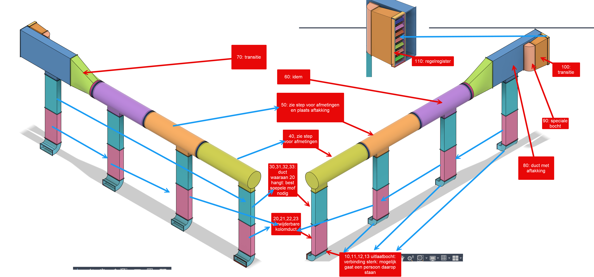

AHU I — Subassembly I
Machine-uitlaten naar verbindingsassembly J
Bronnen: actuele Fusion-export en STEP 2026_09_13_@_12-06-34_AHU_outlets to recuperator; TM pre-offer S04874. Alle namen hieronder zijn de exacte Fusion-componentnamen.

| Callout | Aantal | Exacte Fusion-componentnaam | Geverifieerde Fusion-eigenschappen | TM-scope | STEP-check | Prijsindicatie excl. btw |
|---|---|---|---|---|---|---|
| 10-13 | 4 | Bocht R 800 x 870 90° 166 opstand boord 30/3 | Vier identieke componenten; 90°, opstand 166 mm, boord 30/3. | MEAM-koopdeel; geen TM-fabricagepost. | Koopdeelassembly; kindgeometrie uitgesloten | - |
| 20-23 | 4 | Outlet BOTTOM duct ID 800 x 270 kader 30 L 1941.0 mm | ID 800 x 270 mm; kader 30; L 1941.0 mm; ruw Fusion-oppervlak 7.795 m²/st.; massa 62.11 kg/st. | TM-fabricagekandidaat. | Native STEP gekoppeld; Fusion PASS | € 1.053,86* |
| 30-33 | 4 | Outlet TOP duct ID 800 x 270 kader 30 L 1753.0 mm | ID 800 x 270 mm; kader 30; L 1753.0 mm; ruw Fusion-oppervlak 8.647 m²/st.; massa 68.88 kg/st. | TM-fabricagekandidaat. | Native STEP gekoppeld; Fusion PASS | € 1.169,14* |
| 40-60 | 1 | AHU_outlets to recuperator_Main outlet part 3 R900 L 3402.0 mm deksel + aftakking lees step | R900; L 3402.0 mm; deksel + aftakking; ruw Fusion-oppervlak 21.526 m²; massa 169.40 kg. | TM-fabricagekandidaat. | Native STEP gekoppeld; Fusion PASS | € 408,24** |
| 40-60 | 1 | AHU_outlets to recuperator_Main outlet part 3 R900 L 3359.0 mm deksel + aftakking lees step | R900; L 3359.0 mm; deksel + aftakking; ruw Fusion-oppervlak 20.015 m²; massa 157.50 kg. | TM-fabricagekandidaat. | Native STEP gekoppeld; Fusion PASS | € 403,08** |
| 40-60 | 1 | AHU_outlets to recuperator_Main outlet part 3 R900 L 3450.0 mm deksel + aftakking lees step | R900; L 3450.0 mm; deksel + aftakking; ruw Fusion-oppervlak 20.531 m²; massa 161.54 kg. | TM-fabricagekandidaat. | Native STEP gekoppeld; Fusion PASS | € 414,00** |
| 70 | 1 | transitie 1540x440 kader30 naar rond ID 900 ASYMMETRISCH L 1600 +recht 50 | 1540 x 440 mm naar ID900; asymmetrisch; kader 30; L 1600 mm; extra recht 50 mm; ruw Fusion-oppervlak 10.314 m²; massa 82.38 kg. | TM-fabricagekandidaat. | Native STEP gekoppeld; Fusion PASS | € 348,62* |
| 80 | 1 | rect duct 1540x440 L 3365.1 mm kaders 30 GAT 1447.0 mmx344.0 mm | 1540 x 440 mm; L 3365.1 mm; kaders 30; gat 1447.0 x 344.0 mm; ruw Fusion-oppervlak 28.258 m²; massa 224.01 kg. | TM-fabricagekandidaat. | Native STEP gekoppeld; Fusion PASS | € 955,12* |
| 90 | 1 | speciale korte bocht 1447.0 mmx344.0 mm R =1D recht 80 + kader 30 dichting | 1447.0 x 344.0 mm; R=1D; recht 80 mm; kader 30; dichting; ruw Fusion-oppervlak 2.626 m²; massa 21.37 kg. | TM-fabricagekandidaat. | Native STEP gekoppeld; Fusion PASS | € 88,75* |
| 100 | 1 | Reductie1600x500 to 340 x1443 L1000 kaders 30 | 1600 x 500 mm naar 340 x 1443 mm; L 1000 mm; kaders 30; ruw Fusion-oppervlak 6.523 m²; massa 54.93 kg. | TM-fabricagekandidaat. | Native STEP gekoppeld; Fusion PASS | € 220,48* |
| Geen aparte callout | 3 | AIR_INLET_slider 900 | 900 mm; L 200 mm; ruw Fusion-oppervlak 1.178 m²/st.; massa 9.35 kg/st. | TM-fabricagekandidaat. | Native STEP gekoppeld; Fusion PASS | Prijsaanvraag |
| 110 | 1 | Louvre_Damper_1540x440_ShortSpan | Koopdeelassembly met 109 directe subcomponenten; geen eigen Fusion-body. | MEAM-koopdeel; geen TM-fabricagepost. | Koopdeelassembly; geen directe STEP-solid | - |
* Rekenindicatie: ruw Fusion-oppervlak x € 33,80/m², het tarief uit TM pre-offer S04874 voor rechthoekige uitlaatkanalen en -bochten. Dit is geen Lukanorm-prijsoppervlak en geen offerte. ** Alleen de DN900-basisbuis: lengte x € 120,00/m uit hetzelfde pre-offer; deksel en aftakking zijn niet geprijsd.